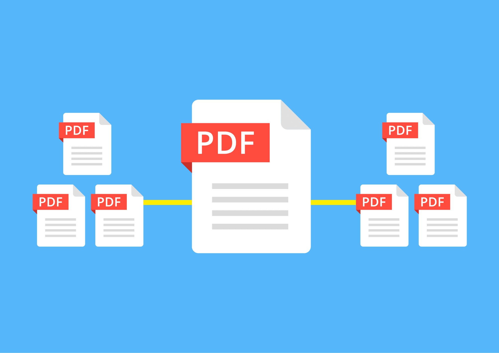
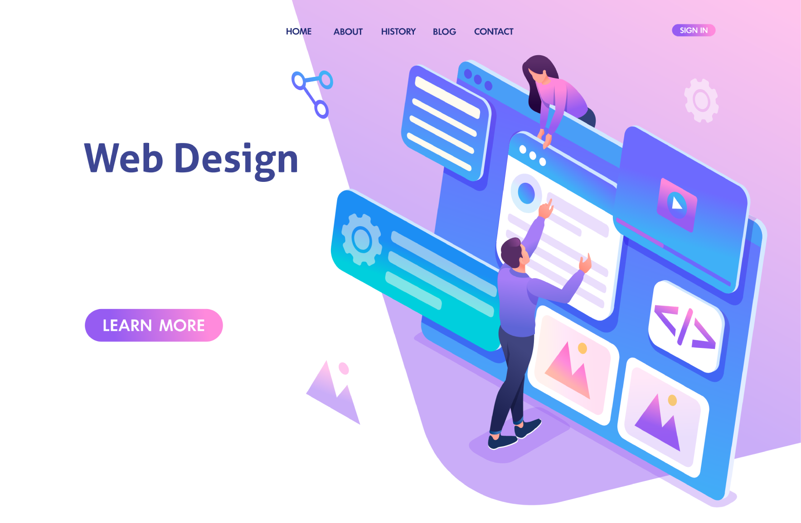
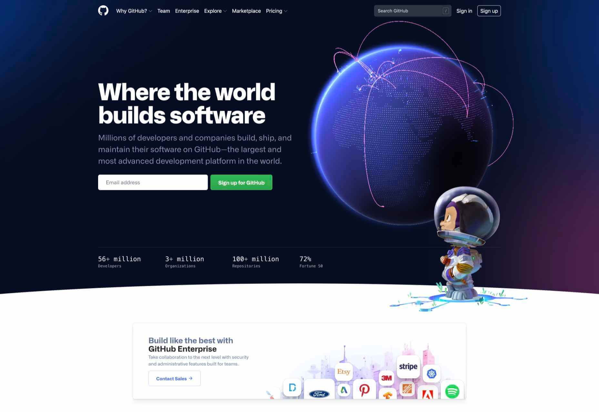

Principales proyectos Realizados

Historia del internet
Documentación con información sobre la historia de los servidores y su puesta en funcionamiento para crear lo que hoy conocemos como internet, haciendo análisis sobre teorias como internet muerto, y muchas otras que son de gran utilidad para poder entender mejor cómo funciona esta herramienta que hoy en día todos usamos.


